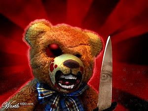
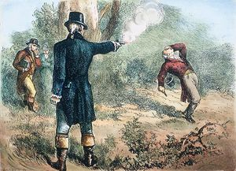

Asesino
 De: La Frikipedia, la enciclopedia extremadamente seria.
De: La Frikipedia, la enciclopedia extremadamente seria.
 tipica cara de un asesino en serie
«Pequeño demonio»
~ Homer Simpson usando el método 115.3, asfixia
El término asesino viene de la palabra árabe "haššāšīn" que significa Altair, quien fue un famoso asesino en el año 1191.
Existe cierta duda en lo que de verdad hace un asesino, asi que en palabras que cualquier friki pueda entender les dire: ""un asesino no mata"" lo que mata son las armas que ellos usan a excepcion que que use sus manos. Un asesino no solo se limita a quitar la vida, tambien es capaz de eliminar otras cosas como las neuronas (vease Daddy Yankee).
A diferencia de lo que muchos creen, un asesino no es un tipo de sangre fria que vive en una casa abandonada, al contrario, son personas activas que miran television, salen de compras, cagan, comen, cagan y comen (si al mismo tiempo), juegan guitar hero en sus tiempos libres con sus amigos y en ocaciones amenazan a civiles, tienen sexo y te observan mientras duermes.
Mejor que un asesino, un assa cross
Mi Papá Síntomas para saber si eres asesino
- Sentir una extraña atracción hacia los cuchillos, las hachas, las pistolas, las escopetas, los rifles, los bazookas, la dinamita y El juego "GTA: San Andreas"
- Sentir una extraña sensación que te diga que uses todo lo anterior contra una persona. (Si a partir de aquí no tienes mas síntomas, es que odias a tu jefe o a tu profesor)
- Este tercer síntoma es que te ha gustado quitarle a vida a uno entre seis-mil millones. (Si a partir de aquí no tienes más síntomas, es que eres un asesino)
- Sientes la sensación esa que sientes que te ven feo y las ardillas te hablan y dicen que mates a más personas.
- Lo haces, matas a más personas (incluyendo a las ardillas).
- Quieres poner un paquete bomba.
- Si juegas a Assassins Creed y matas a los guardias por placer es que eres un asesino.
- Si nunca te pierdes tom y jerry
- Si sales a la calle con paraguas en días soleados.

te quiero yo, y tu a mi...
Asesinos Famosos
Eddie con las manos en la masa
- George Bush: Famoso por legalizar la pena de muerte.
- Altair: Asesino de la edad Media.
- Sam Fisher: Splinter Cell de la CIA.
- Ezio: Asesino del renacimiento italiano.
- Leonidas: Famoso por cargarse a su padre y a varios millones de persas.
- Tu puta madre: Famosa por matar a tu hamster de la infancia.
- Eminem: Famoso por matar a sangre fria al Rock And Roll.
- Bin Laden: Famoso por chocar un avion en Estados Unidos que llevaba 1 pasajero.
- Connor: Asesino de la revolución estadounidense, famosos por meterle la madre a mas de 1000 británicos.
- Hitler: Famoso por pegarse un tiro y matar a seis millones de judios.
- La Santa Inquisición: Famosos por matar a los que se masturban y a los inventores y cientificos.
- Un n00b: Al matar la paciencia de los demas.
- Daddy Yankee: Más grande asesino de neuronas.
- Neo: Famoso asesino de la tierra de Matrix.
- Ozzy Osbourne: Asesino come murcielagos.
- Carl Johnson: Asesino predador actualmente en paradero conocoido: Su casa de los santos, todo el mundo lo sabe y nadie hace nada. ¡¡¡Viva guardia civil estadounidense!!!
- El asesino de la cuchara: el más lento del mundo.
- Chuck Norris: no falta aclararlo
- Pikachu: Famoso por matar muchos judios
- Bill Gates: Famoso por el metodo del Pantallazo Azul
- Dios Eolo: Tiene poderes
- Felipe Ferra Gomez alias el "Ferras": Famoso por "machetiar" a las personas
- Judios: famosos por matar a Jebús.
- daniel lamb:tipico caso de oir voces en tu cabeza
- Hannibal Lecter: famoso por comerse el cuerpo del delito
- 47: Asesino a sueldo profesional humanoide y calvo (porque
le dió cáncer por la radiación del laboratorio lo hicieron así) Famoso por matar a un montón de criminales mundiales, terros, sus clones y su padre, el Dr. House Ort-Meyer. Hasta mató a sus ideales, porque lo traicionaron (Agencia Internacional de Contratos).
Frases de un asesino
- no te metas conmigo
- apurate ya va a comenzar tom y jerry
- quieres ver mi coleccion de armas
- mis juegos favoritos son gta, assasin's creed, resident evil, hitman y manhunt
- lo siento estoy ocupado esta noche
- NO USES ESE CUCHILLO
- voy a hacerle una visita
- Quiero jugar un juego.
Tipos de Asesinos
- Asesino a sueldo: lo hacen por dinero, aveces porque les caes mal, por lo general por dinero, casi siempre se trata de gatos con traumas de la infancia relacionados con un wombat.
- Asesino en serie: por lo general los pasan en la tele, estos atacan por patrones, atacan a minorias como a gordas y ese tipo de personas.
- Asesino Predador: estos son los mas peligrosos, pues tienen 2 vidas, en una pueden ser como cualquien otra persona, pero en la otra son malevolos y te van a matar.
- Asesino en masa: se encuentran por lo general en las religiones, te hacen creer en morir por Diox, se la pasan diciendo pendejadas y si eres de mente debil, pues te la pelaste.
Métodos de Asesinato

No intentes huir, solo prolongas tu muerte
Sugerencias de metodos asesinos
- Por control mental: (solo yo lo puedo hacer), Trata de hacer que tu objetivo le explote la cabeza en miles de pedazos, es el método mas doloroso y sangriento que se ha descubierto, (es perfecto para usar en regaytoneros)
- Con Armas: es el método mas marica que hay, solo apuntar y apretar el gatillo, almenos que seas un gilipollas que no puede ni hacer eso
- Con Pokemones: no tiene nada de especial pero es divertido ver como tiernas criaturas desmiembran a tus enemigos.
- Con Musica: solo ha sido logrado por los regaytoneros, es el metodo mas estupido que hay.
- Con un Kameha: tienes que concentrar tu ki
- Envenenandolos con salsa de soya: Nadie se espera esto, muahahaha.
- Empujandolos de un precipicio: Que mejor forma, aplicando la primer ley de la Fisica.
- Con el pantallazo azul: es el metodo mas desesperante que hay.
- Tumbarlos a un rio: YA WEY!! PINCHE PENDEJO IDIOTA!!
- Asfixiarlos: Ya veras que es divertido hacer esto, solo aprieta su cuello y agítalo sin parar (el cuello pendejo, no pienses mal).
- Sacrificio: Es buena idea, te dan mejores premios entre mas personas mates, empieza dibujando un circulo en el suelo y trae a tus amigos, entre mas cercano sea el lazo filial, mejores cosas.
- Budu: Consigue un muñecos de trapo y clavales algunas agujas, aunque puedes ser creativo, prenderles fuego, orinales encima, entre mas extravagante mejor.
- Asustalos: Ponte una mascara del haloween pasado y sal a las calles con un cuchillo en calzones (suerte y violes a alguien).
- Celular: Tienes una llamada perdida
Armas Homicidas
Lo básico que debes de tener para ser un asesino respetable.
- cuchillo: nada mas efectivo que un acero oxidado y filoso.
- Pistola: Ponle algunos agujeros mas a tu enemigo, mejor para el si es fan de Bob esponja
- Las Manos: Que mejor cosa que tener las manos de un bello color carmesí.
- Escopeta: Es como un gran pene de metal que eyacula plomo.
- Bombas: Perfectas para un magnicidio.
- Autos: Una defensa llena de sangre, es un auto feliz.
- Destapa corchos: Anda, sácale los ojos a tus enemigos.
- Un lápiz: Usa tu creatividad y deja un bonito mensaje en tus victimas.
- Una Guitarra: my guitar wants to kill your mama[1]
- Insecticida: Nueva formula, ahora con 20% mas, y dura hasta 2 semanas!!.
- Una piedra: Como lo hacian los picapiedras.
- El desctrutinador: Una arma registrada por Doofenshmirtz Evil Co.© ® ™
- Un lanza llamas: Perfecto para las barbacoas.
- Resorteras Nucleares: Patentadas por la UNAM.
- Cartitas de Yugioh: Usa la caja carnivora.
- Mandarinas: Vamos, lánzalas con toda tu fuerza, nunca sabes a quien golpearan.
- Sables de luz: Usa la fuerza mi joven padawan (asegurate de cargar las pilas).
- Libros: Matalos de aburrimiento.
- Una liga de hule: Usa tu imaginacion.
- [Caca]: contiene mucho plutonio.
- tu imaginacion: ñaka
- zumbidos: estupendo contra chinos
- guitarra electrica: saca tu guitar jero que tienes dentro
- aburrimiento: ponlos a leer esto
- control remoto: alto en radiacion
- maruchan: no se
- porno?: ????
 Oye... ¿cuántos pasos tenemos que... Excusas
Debe haber una razón para matar, aquí te damos algunas:
- Traumas de la infancia: Siempre funciona echarle la culpa a tu mamá, después de todo ella te trajo al mundo.
- Voces que solo tu escuchas: Sigue esa pequeña voz en tu retorcida mente que te dice: anda, toma el saca el sacacorchos y clavaselo en el ombligo.
- El te provoco: Buena excusa, te hace ver a ti como la victima y hay mas probabilidades de no ir a la cárcel.
- Mi novia me dejo: Asi es, échale la culpa a esa
puta malparida mujer a la que le diste tus sentimientos y ella te dijo que era lesbiana te dejo solo.
- Subió el precio de la tortilla: No la chinguen, se pasan pinches mamones.
- Te vio feo: Y una ardilla te dijo que estas loco.
- Eres su fan No.1: Que fan no quiere matar a si ídolo mas querido?.
- Me retaron: Nadie quiere quedar como un cobarde frente a sus amigos.
- Lo vi en la tele: La programación de hoy en día muestra mucha violencia, ya sea 24 o los Teletubbies o Barney, todo habla de muerte.
- Simón dijo: Lo que Simón dice es lo que se hace, nadie lo cuestiona, el es un ser superior a todos.
- Porque esto es África: Samina mina ¡eh! ¡eh!, waka waka ¡eh! ¡eh!, samina mina Zangaléwa...
- Hice una apuesta: Cuando hay dinero en juego, todo se vale.
- Por amor: Así es, si no es mía, no es de nadie mas.
- Ofendio a mi mamá: A mi madre y a la virgen las respetas cabrón.
- Me debia dinero: Amm, bien, y ahora como diablos te va a pagar, bravo, eres un genio.
- Tenia mi marihuana: No creo que sea buena idea mencionar eso.
- El era un insecto: La supervivencia del mas apto, si no tiene el Ki suficiente, no vale la pena que viva.
- Me robo mis discos: Esta es solo para jebis
- Problemas mentales: siempre es bueno fingir demencia
- Un amigo suyo te dijo que quería dejarte inconsciente con una pistola de esas que aturden, llevarte al bosque, atarte y hacer una película snuff contigo: Muy convincente y elaborado, pero antes de decirlo consigue a ese amigo que sustente tu cortada.
Autor(es):
- Nexo
- Fordus
- Doctor grijander
- Sebator
- Gabboman
- Manamaster
- Cibercrank
- Veni Vidi Vici
- Dark temptation
- Paround
Frikipedia 2005-2016, Licencia
GFDL 1.2 - Extraído por FrikiLeaks